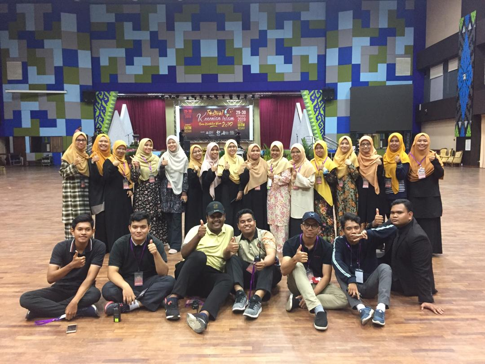
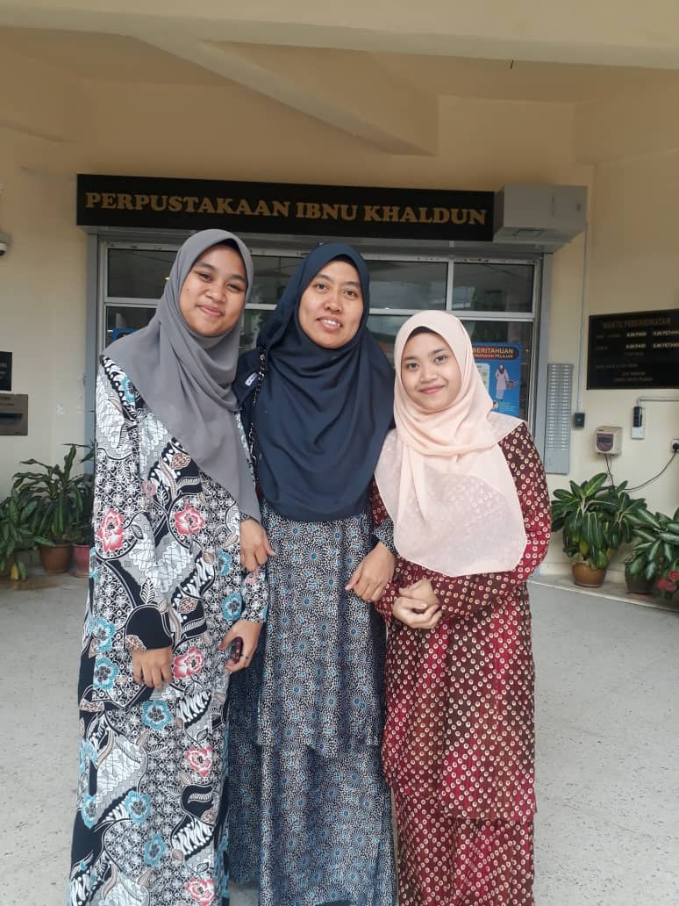
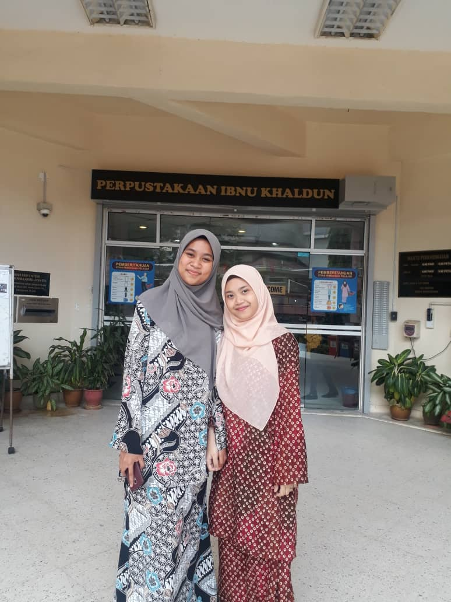

|  | During my 2nd semester of diploma, I joined HEI crew for Festival Kesenian Islam that conducted on 29 until 30 September 2019. I join as coordinator bureau for Pencetus Ummah UiTM. During the entire Festival I learn more about how to handle event and also to become a good leader. There are many lessons that I got from conducted this event that I can use in the future. |
| During my 3rd semester break of Diploma, I have to do practical to pass my subject of Library Fieldwork. I went to Perpustakaan Ibnu Khaldun in Politeknik Premier Shah Alam. The practical runs for 6 weeks from 13 January until 20 February. The moment that I really can’t forget is that on the second day, it is our first time to teach in information literacy class and then we have to teach deaf student. It is quite difficult but in the same time it is very fun. |  |